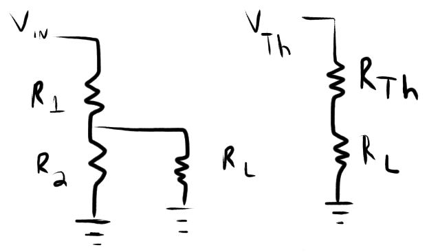
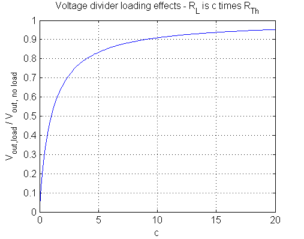

Loading a voltage divider

When there is no load current, the output voltage is \(V_{out, no load}=\frac{R_{2}}{R_{2}+R_{1}}V_{in}\). The Thevenin voltage source of the
divider is the open circuit voltage at the output, namely \(V_{Th}=V_{out, no load}=\frac{R_{2}}{R_{2}+R_{1}}V_{in}\) and the
Thevenin resistance is \(R_{Th} = R_{1} // R_{2} = \frac{R_{1}R_{2}}{R_{1}+R_{2}}\). It is easy to show that \(\frac{V_{out,load}}{V_{out, no\,load}}=\frac{R_{L}}{R_{Th}+R_{L}}\).

MATLAB script
When \(R_{L}\) is 10 times \(R_{Th}\), at least 90% of the intended output signal is transferred to the load.